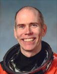

Lyndon B. Johnson Space Center
Houston, Texas 77058
|
National Aeronautics and Space Administration Lyndon B. Johnson Space Center Houston, Texas 77058 |
 |
Biographical Data |
||
Daniel T. Barry (M.D., Ph.D.)
NASA ASTRONAUT (FORMER)
PERSONAL DATA: Born December 30, 1953, in Norwalk, Connecticut, but considers South Hadley, Massachusetts, to be his hometown. Enjoys flying, tennis, running.
EDUCATION: Graduated from Bolton High School, Alexandria, Louisiana, in 1971; received a bachelor of science degree in electrical engineering from Cornell University in 1975; a master of engineering degree and a master of arts degree in electrical engineering/computer science from Princeton University in 1977; a doctorate in electrical engineering/computer science from Princeton University in 1980; and a doctorate in medicine from the University of Miami in 1982.
ORGANIZATIONS: Institute of Electrical and Electronic Engineers (IEEE); American Association of Electrodiagnostic Medicine (AAEM); American Academy of Physical Medicine and Rehabilitation (AAPMR); Association of Academic Physiatrists (AAP); Sigma Xi; Association of Space Explorers, United States Tennis Association.
SPECIAL HONORS: 1971 McMullen Engineering Award. 1979 NSF National Needs Fellow. 1984 Young Investigator Award, American Association of Electrodiagnostic Medicine (AAEM). 1985-1990 Clinical Investigator Development Award, National Institutes of Health. 1990 Silver Crutch Teaching Award, University of Michigan. 1992-1996 Trustee, Albert and Ellen Grass Foundation. 1996 Honorary 2-Dan Go Player, Nihon Kiin, Japan. 1996, 1999, 2001 NASA Space Flight Medals. 1996 Honorary Doctor of Science, St. Louis University. 1998 Vladimir Komarov Diploma, Federation Aeronautique Internationale. 1999 Honorary Life Member, United States Tennis Association. 1999 Stuart Reiner Award, AAEM, 2000 William Beaumont Award, Wayne State Medical Society. 2000, 2002 NASA Exceptional Service Medals. 2001 Top 10 in the world career spacewalk hours. 2001 100 Most Notable Princeton Graduate School Alumni of the 20 th Century. 2002 Erdman Award, American Association of Academic Physiatrists. 2003 Paul J, Corcoran Award, Harvard Medical School. 2003 Honorary Doctor of Science, Beloit College.
EXPERIENCE: Following graduate school at Princeton University, Dr. Barry was a National Science Foundation postdoctoral fellow in physics at Princeton. He then attended the University of Miami Medical School, graduating in 1982. He completed an internship and a Physical Medicine and Rehabilitation residency at the University of Michigan in 1985. He was appointed as an assistant professor in the Department of Physical Medicine and Rehabilitation and in the Bioengineering Program at the University of Michigan in 1985, and his tenure was approved by the Regents in 1992. He spent the summers of 1985-87 at the Marine Biological Laboratory in Woods Hole, Massachusetts, supported by the Grass Foundation for work in skeletal muscle physiology and as the Associate Director of the Grass Foundation Fellowship Program (1986-87). His research primarily involved biological signal processing, including signal processing theory, algorithms, and applications to specific biological systems. The applications included acoustic signals generated by contracting skeletal muscle, electrical signals from muscle, and heart sounds. He has also worked in prosthetic design. Dr. Barry’s work has been supported by the National Institutes of Health, the National Science Foundation, the Grass Foundation, and the American Heart Association of Michigan. He has five patents, over 50 articles in scientific journals, and has served on two scientific journal editorial boards.
NASA EXPERIENCE: Selected by NASA in March 1992, Dr. Barry reported to the Johnson Space Center in August 1992. He completed one year of training and qualified for assignment as a mission specialist on Space Shuttle flight crews. Dr. Barry has worked on primary payload development, the Shuttle Avionics Integration Laboratory (SAIL), portable computing issues for Space Shuttle, Chief of Astronaut Appearances, flight clinic ombudsman, source board member for the NASA Space Biomedical Research Institute (NSBRI), Astronaut Office team lead to NASDA, the Japanese Space Agency, Chief, ISS Hardware, US and International, and a tour of duty with the Office of Biological & Physical Research and the Office of Education, NASA Headquarters, Washington D.C. A veteran of three space flights, STS-72 (1996), STS-96 (1999) and STS-105 (2001), Dr. Barry has logged over 734 hours in space, including 4 spacewalks totaling 25 hours and 53 minutes. Dr. Barry retired from NASA in April 2005 to start his own company “Denbar Robotics” where he currently builds robots.
SPACE FLIGHT EXPERIENCE: STS-72 Endeavour (January 11-20, 1996) was a 9-day flight during which the crew retrieved the Space Flyer Unit (launched from Japan 10-months earlier), deployed and retrieved the OAST-Flyer, and Dr. Barry performed a 6 hour, 9 minute spacewalk designed to demonstrate and evaluate techniques to be used in the assembly of the International Space Station. Mission duration was 142 Earth orbits, traveling 3.7 million miles in 214 hours and 41 seconds.
STS-96 Discovery (May 27 to June 6, 1999) was the 1st mission to dock with the International Space Station. It was a 10-day mission during which the crew delivered 4 tons of logistics and supplies in preparation for the arrival of the first crew to live on the station. The mission was accomplished in 153 Earth orbits, traveling 4 million miles in 235 hours and 13 minutes. Dr. Barry performed a spacewalk of 7 hours and 55 minute duration.
STS-105 Discovery (Aug 10-22, 2001) was the 11th mission to the International Space Station. While at the orbital outpost, the STS-105 crew delivered the Expedition-3 crew, attached the Leonardo Multi-Purpose Logistics Module, and transferred over 2.7 metric tons of supplies and equipment to the station. Dr. Barry and Pat Forrester performed two spacewalks totaling 11 hours and 45 minutes of EVA time. STS-105 also brought home the Expedition-2 crew. The STS-105 mission was accomplished in 186 orbits of the Earth, traveling over 4.9 million miles in 285 hours and 13 minutes.
AUGUST 2005